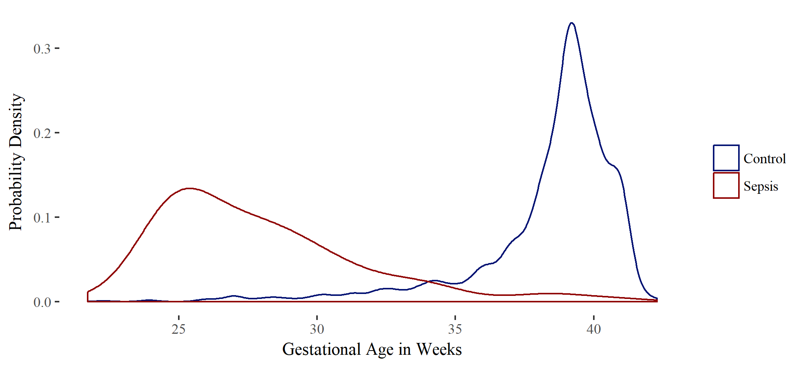
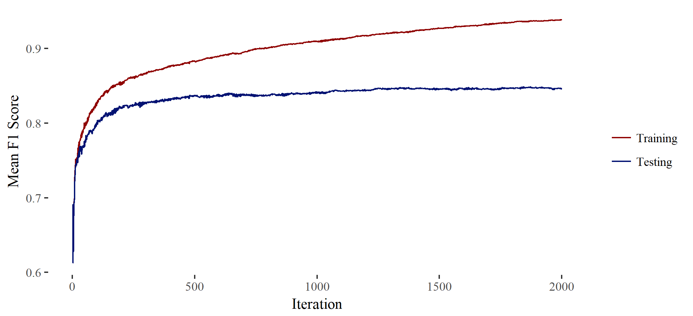

My Projects
Late Onset Sepsis in Neonates
November, 2018
A retrospective study of neonatal sepsis at the University of Utah Hospital system. Characteristics and treatment of neonatal sepsis are compared between confirmed and unconfirmed cases. link
Machine Learning R Package sboost
October, 2018
Here I describe sboost which is an R package I developed as an implementation of AdaBoost with decision stumps. Also included is a description of a machine learning project to analyze data on Android app system calls in a Kaggle competition setting. link
Detecting Peaks in Biodiversity
April, 2017

Answering the question "Where are areas of high biodiversity?" by extending the application of a density based clustering algorithm. link
Proposed Trajectory Comparison Method
April, 2017

This is a proposal for a new method of trajectory comparison using topological data analysis. The method involves using a modified version of persistent homology. link
IUCN Red List by Country
December, 2016

This is a project using HTML, CSS, JavaScript, and D3 to display data in an interactive visualization. The data displayed is summary statistics by country for animals, retrieved from the IUCN Red List of Threatened Species. link